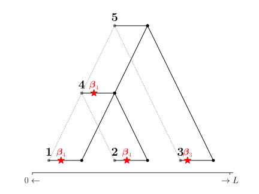
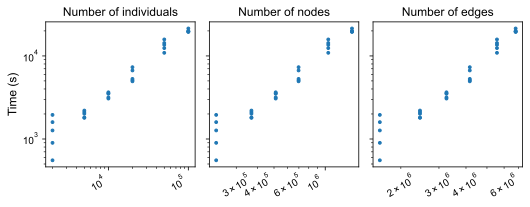
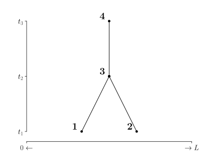
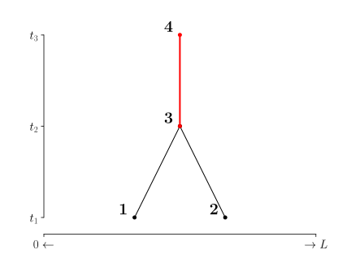
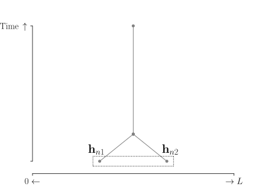
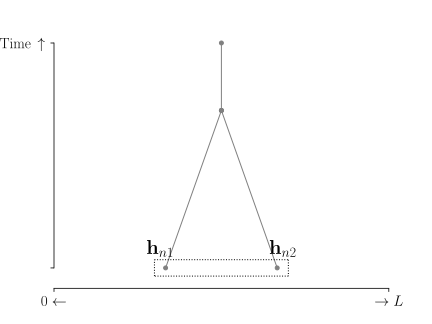
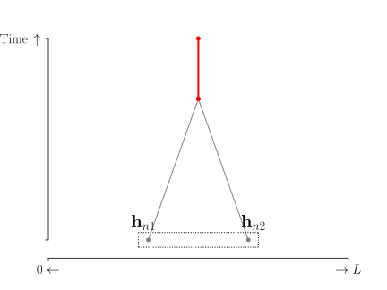
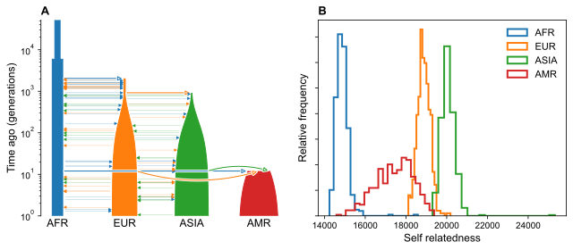
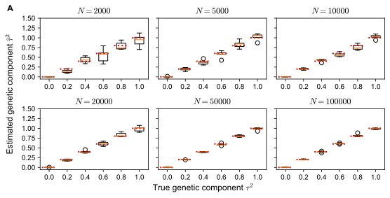

Modelling complex traits with ancestral recombination graphs
Mar 7, 2025
Overview
The ancestral recombination graph (ARG) describes the evolutionary relationship between
genetic materials in the presence of recombination and drift
The full probabilistic process is complicated
In this work, we condition on the realized ARG, resulting a sequence of local trees

What is the conditional distribution of a trait given the trees?
Since the genealogy is fixed, the only randomness that remains is mutation
\[ \text{Trait} \mid \text{Local trees} \quad \sim \quad ? \]
Linear mixed model
Linear mixed models are popular in quantitative genetics \[ \mathbf{y} = \underbrace{\mathbf{Z}\mathbf{u}}_{\text{random effects}} + \underbrace{\mathbf{X}\mathbf{b}}_{\text{fixed effects}} + \boldsymbol{\varepsilon} \] where \(\mathbf{Z}\) includes genotyped variants and \(\mathbf{X}\) is the covariate matrix
In particular, the SNP effects \(\mathbf{u} \sim p(\cdot)\) is random
Some questions …
- What’s the source of \(\mathbf{u}\)’s randomness?
- Why are \(\mathbf{u}\)’s entries independent?
- How should we weigh the entries? e.g. \(\mathbf{u}_j \sim N\left(0,\frac{h^2}{M}\right)\)
We answer these questions from an evolutionary perspective
Setup and derivation
The trait \(\mathbf{y}\) is a linear function of the genotype \(\mathbf{G}\) \[ \mathbf{y} = \mathbf{G}\boldsymbol{\beta} + \boldsymbol{\varepsilon} \] \(\mathbf{y} \in \mathbb{R}^N\), \(\mathbf{G} \in \mathbb{R}^{N \times P}\), \(\boldsymbol{\beta} \in \mathbb{R}^P\), and \(\boldsymbol{\varepsilon} \in \mathbb{R}^N\)
\(\mathbf{G}\) contains all positions the genome including genotyped ones
How do we get traits?
\[ \mathbf{y}_1=\boldsymbol{\beta}_1+\boldsymbol{\beta}_2, \; \mathbf{y}_2 = \boldsymbol{\beta}_2, \; \mathbf{y}_3 = \boldsymbol{\beta}_2 \]
 \[ \mathbf{y}_1=\boldsymbol{\beta}_4, \; \mathbf{y}_2=\boldsymbol{\beta}_4, \; \mathbf{y}_3 = \boldsymbol{\beta}_3 \]
We get trait values by adding up effect sizes (\(\boldsymbol{\beta}\))
- \(\mathbf{y}_n = \mathbf{G}_{n1} \boldsymbol{\beta}_1 + \mathbf{G}_{n2} \boldsymbol{\beta}_2\)
- \(\mathbf{y}_n = \mathbf{G}_{n3} \boldsymbol{\beta}_3 + \mathbf{G}_{n4} \boldsymbol{\beta}_4\)
We get different subsets of \(\mathbf{G}\) every time mutations realize
What happens if we consider branches first?
Branch-centric view of trait transmission
Inherit a branch first, then a mutation
- Sample \(1\) inherits edges \(1-4\) and \(4-5\)
- Sample \(2\) inherits edges \(2-4\) and \(4-5\)
- Sample \(3\) inherits edge \(3-5\)
Branch’s effect \(=\) Sum of mutations’ effect
- Effect of \(4-5 = 0\) (1st realization)
- Effect of \(4-5 = \boldsymbol{\beta}_4\) (2nd realization)
Branch effect is a random variable!
From variants to branches
\[ \text{Trait} = \sum_p \text{Variant$_p$ effect size} \quad \Rightarrow \quad \text{Trait} = \sum_e \text{Branch$_e$ effect size} \]
\[ \boldsymbol{\upsilon}_e = \text{Branch$_e$ effect size} = \sum_p \text{Variant$_p$ on Branch$_e$} \]
\[ \mathbf{y} = \sum_p \mathbf{G}_p\boldsymbol{\beta}_p + \boldsymbol{\varepsilon} \quad \Rightarrow \quad \mathbf{y} = \sum_e \mathbf{Z}_e\boldsymbol{\upsilon}_e + \boldsymbol{\varepsilon} \] where \(\mathbf{Z}_{ne}=\) the number of haplotypes of \(n\) that inherit \(e\)
\[ \mathbf{G}_{\mathrm{genotyped}} \; \subset \; \mathbf{Z} \quad \Rightarrow \quad \text{LMMs} \; \subset \; \text{New model} \]
Ancestral recombination graph linear mixed model (ARG-LMM)
Split \(\boldsymbol{\upsilon}\) to \(\mathbf{u} = \boldsymbol{\upsilon} - \mathrm{E}\boldsymbol{\upsilon}\) and \(\mathbf{f}= \mathrm{E}\boldsymbol{\upsilon}\)
\[ \mathbf{y} = \mathbf{Z} \mathbf{u} + \mathbf{Z} \mathbf{f} + \boldsymbol{\varepsilon} \]
This is the ancestral recombination graph linear mixed model (ARG-LMM) and \(\mathbf{Z} \mathrm{Cov}(\mathbf{u}) \mathbf{Z}^T\) is the expected genetic relatedness matrix (eGRM)
- The random effects are tied to a physical process - Mutations!
- We start from more lower-level evolutionary statements to recover mixed model assumptions
- Independent random effects, random effect weights, normality, \(\ldots\)
How do we weigh branches of the ARG?
\[ \mathrm{Var}(\mathbf{u}_e) \quad \propto \quad \text{Number of mutations} \quad \propto \quad \text{Area}=l_es_e \]
\(\textsf{tslmm}\), fitting ARG-LMM to tree sequences
\(\textsf{tslmm}\) utilizes an efficient genetic relatedness matrix - vector product to fit the restricted maximum likelihood (REML) objective
It can estimate variance components and compute polygenic scores by best linear unbiased prediction (BLUP)
The matrix-vector product algorithm
The algorithm needs to pass mutations to the correct samples
A naive approach is to push the mutations down to the leaves every time
Only send the mutations down when edge’s subtopology is altered
Modified figures by Nathaniel Pope (Oregon)
Runtime for variance component estimation

The runtime scales linearly with respect to the number of individuals (genome length = \(10^8\))
Best linear unbiased prediction (BLUP)
True trees are better, but inferred trees are not too behind!
Complex traits through the lens of ARG-LMM
\[ \text{What does ARG-LMM tell us about complex trait analysis?} \]
Genetic value covariance


\(\mathbf{y}_1 = \mathbf{u}_{13} + \mathbf{u}_{34} \quad \text{and} \quad \mathbf{y}_2 = \mathbf{u}_{23} + \mathbf{u}_{34}\)
\[ \mathrm{Cov}(\mathbf{y}_1, \mathbf{y}_2) = \mathrm{Cov}(\mathbf{u}_{13} + \mathbf{u}_{34}, \mathbf{u}_{23} + \mathbf{u}_{34}) = \mathrm{Cov}(\mathbf{u}_{34}, \mathbf{u}_{34}) = \mathrm{Var}(\mathbf{u}_{34}) \propto t_3 - t_2 \]
\[ \mathrm{Cov}(\mathbf{y}_1, \mathbf{y}_2) = \mathrm{Cov}(\mathbf{u}_{13} + \textcolor{red}{\mathbf{u}_{34}}, \mathbf{u}_{23} + \textcolor{red}{\mathbf{u}_{34}}) = \mathrm{Cov}(\textcolor{red}{\mathbf{u}_{34}}, \textcolor{red}{\mathbf{u}_{34}}) = \mathrm{Var}(\textcolor{red}{\mathbf{u}_{34}}) \propto t_3 - t_2 \]
Heritability is ill-defined in ARG-LMM
Heritability is \[ h_g^2 = \frac{\mathrm{Var}(\mathbf{g}_n)}{\mathrm{Var}(\mathbf{y}_n)} =\frac{\mathrm{Var}(\mathbf{g}_n)}{\mathrm{Var}(\mathbf{g}_n)+\mathrm{Var}(\boldsymbol{\varepsilon}_n)} \] This applies to all individuals \(n \in \{1,\ldots,N\}\)
However, all individuals have a different amount of genetic variance (except haploids) \[ \mathrm{Var}(\mathbf{g}_n) = \mathrm{Var}(\mathbf{h}_{n1}+\mathbf{h}_{n2}) = \mathrm{Var}(\mathbf{h}_{n1}) + \mathrm{Var}(\mathbf{h}_{n2}) + 2\mathrm{Cov}(\mathbf{h}_{n1},\mathbf{h}_{n2}) \]
\[ \mathrm{Var}(\mathbf{g}_n) = \mathrm{Var}(\mathbf{h}_{n1}+\mathbf{h}_{n2}) = \mathrm{Var}(\mathbf{h}_{n1}) + \mathrm{Var}(\mathbf{h}_{n2}) + 2\textcolor{red}{\underbrace{\mathrm{Cov}(\mathbf{h}_{n1},\mathbf{h}_{n2})}_{\text{Self-relatedness}}} \]
We can’t define a single quantitity \(h^2_g=\frac{\mathrm{Var}(\mathbf{g}_n)}{\mathrm{Var}(\mathbf{y}_n)}\) for everyone



Polygenic prediction

Some people are less genetically variable than others
Some people are harder to predict genetically than others
Some populations are inherently harder to predict!
Demographic model from (Browning et al. 2018)
Other bits and future directions
Pseudoreplication due to shared ancestry (preprint will be posted soon!)
Missing heritability, Mutations vs Mendelian segregation
A powerful trait simulator based on ARG-LMM
Super interesting technical details and proofs
Predicting polygenic scores of internal nodes
Thank you for listening
Collaborators: Nathaniel Pope (Oregon), Jerome Kelleher (Oxford), Gregor Gorjanc (Edinburgh), and Peter Ralph (Oregon)
References
Technical Notes
Edge splitting
- Nodes and edges are reused across multiple trees in a tree sequence
- Edges, in particular, may not have a unique set of samples along their span
- Salehi Nowbandegani and colleagues bricked the edges to divide them (Salehi Nowbandegani et al. 2023)
- Henceforth, we assume that edges are splitted to have a unique subtopology \[ \mathbf{Z}_{ne} = \text{The number of haplotypes of individual $n$ that inherit $e$} \] The overall matrix \(\mathbf{Z}\) is an individual-edge design matrix.
Collapsing variants to edges
- When does an individual possess a derived allele? (\(\text{ancestral}=0\), \(\text{derived}=1\))
- Let \(\mathbf{1}_{ep}\) be the indicator random variable of a mutation at edge \(e\) and position \(p\)
An individual should be a descendant of an edge (\(\mathbf{Z}_{ne}=1\))
\[ + \] That edge should have mutation (\(\mathbf{1}_{ep}=1\))
\[ \mathbf{G}_{np} = \sum_{e: p \in e} \mathbf{Z}_{ne} \mathbf{1}_{ep} \quad \Leftrightarrow \quad \mathbf{G}_p = \sum_{e:p \in e} \mathbf{Z}_{e} \mathbf{1}_{ep} \]
- Assumes that there are no parent-child mutation pairs, but allows some recurrent mutations
Exchange the summations
Recall \(\mathbf{G}_p = \sum_{e:p \in e} \mathbf{Z}_{e} \mathbf{1}_{ep}\) and \(\mathbf{y} = \sum_{p=1}^P \mathbf{G}_p \boldsymbol{\beta}_p + \boldsymbol{\varepsilon}\)
Substitute \(\mathbf{G}_p\) \[ \textcolor{red}{\sum_{p=1}^P \sum_{e:p \in e}} \mathbf{Z}_e \boldsymbol{\beta}_p \mathbf{1}_{ep} + \boldsymbol{\varepsilon} \]
Exchange the inner and the outer summation \[ \textcolor{red}{\sum_{e=1}^E \sum_{p:p \in e}} \mathbf{Z}_e \boldsymbol{\beta}_p \mathbf{1}_{ep} + \boldsymbol{\varepsilon} \]
Pull out \(\mathbf{Z}_e\) and group the positions nested in \(p: p \in e\) \[ \begin{aligned} & \sum_{e=1}^E \mathbf{Z}_e \textcolor{blue}{\left(\sum_{p:p\in e} \boldsymbol{\beta}_p \mathbf{1}_{ep} \right)} + \boldsymbol{\varepsilon} \\ &= \sum_{e=1}^E \mathbf{Z}_e \textcolor{blue}{\boldsymbol{\upsilon}_e} + \boldsymbol{\varepsilon} \\ &= \mathbf{Z} \boldsymbol{\upsilon} + \boldsymbol{\varepsilon} \end{aligned} \]
\(\boldsymbol{\upsilon}\) is a random variable made up of mutation-driven random variables \(\mathbf{1}_{ep}\)!
Random effects are independent
Independent entries of random effects is a key assumption of linear mixed models
This can be proved in ARG-LMM, instead of assuming it \[ \mathrm{Cov}( \mathbf{u}_e, \mathbf{u}_{e'} ) = \sum_{p \in e,e'} \boldsymbol{\beta}_p^2 \mathrm{Cov}(\mathbf{1}_{ep}, \mathbf{1}_{e'p}) \]
The covariance between the indicators are higher-order terms of mutation rates, so we ignore it (Wakeley 2008) \[ \begin{aligned} \mathrm{Cov}(\mathbf{1}_{ep}, \mathbf{1}_{e'p}) &= \mathrm{E}[\mathbf{1}_{ep}\mathbf{1}_{e'p}] - \mathrm{E}[\mathbf{1}_{e'p}]\mathrm{E}[\mathbf{1}_{ep}] \\ &= 0 -l_eu_{ep}l_{e'}u_{e'p} \approx 0 \end{aligned} \] where \(l_e\) is the (time-)length of edge \(e\).
The marginal distribution of \(\mathbf{u}_e\)?
The Gaussian prior on random effects is a popular choice
One might be tempted to invoke the central limit theorem to \(\mathbf{u}_e\) (sum of indicators) \[ \mathbf{u}_e \bigg/ \sqrt{l_e s_e} \cdot \sqrt{ \frac{1}{s_e} \sum_{p:p \in e} \boldsymbol{\beta}_p^2 u_{ep} } \rightarrow N(0,1^2) \text{ as } s_e \rightarrow \infty \] where \(s_e\) is the span (in base pairs) of edge \(e\)
The convergence is unlikely to be fast enough given the small value of \(\mathbf{E}[\mathbf{1}_{ep}]\) (Berry-Esseen).
Fortunately, the variance is computable and is \[ \mathrm{Var}(\mathbf{u}_e) = l_e s_e \cdot \frac{1}{s_e} \sum_{p:p \in e} \boldsymbol{\beta}_p^2 u_{ep} \]
More on \(\mathrm{Var}(\mathbf{u}_e)\)
- The weight \(\mathrm{Var}(\mathbf{u}_e)\) has two components
- The area \(l_e s_e\)
- Mutation rate-weighted squared average of effect sizes \[ \tau_e^2 = \frac{1}{s_e} \sum_{p:p \in e} \boldsymbol{\beta}_p^2 u_{ep} \]
- As a measure of functional significance, variance components are confounded by the area
Fixed effects are constant under neutrality
- Suppose that \(u_{ep}=u_p\), i.e., the mutation rate is constant across edges for a given position
\[ \begin{aligned} &\left[ \mathbf{Z} \mathbf{f} \right]_n = \sum_{e=1}^E \mathbf{Z}_{ne} \mathbf{E} \left[ \sum_{p: p \in e} \boldsymbol{\beta}_p\mathbf{1}_{ep} \right] \\ \end{aligned} \]
\[ \sum_{p=1}^P \boldsymbol{\beta}_p u_p \left( \sum_{e: p \in e} \mathbf{Z}_{ne} l_e \right) = \sum_{p=1}^P \boldsymbol{\beta}u_p \cdot 2t_{\mathrm{root},p} = \text{const. resp. to $n$} \]
An intercept is enough to account for the fixed effects \(\mathbf{Z}\mathbf{f}\) under this condition
The assumption is standard in neutral settings
\[ \text{\textcolor{red}{Conjecture:} selection $\Rightarrow$ fixed effects?} \]
Becareful of pseudoreplication
- Non-overlapping samples are not independent
- Everyone shares some amount of mutational history
- Parameter estimates (e.g. variance components) are correlated

This is also the very reason why BLUP works
We are all correlated!
Missing heritability?
ARG-LMM variance component only reflects mutational variability
- Pedigree-based heritability captures Mendelian segregation and mutation is ignored
- ARG-LMM’s generative model only has mutation and no segregation
- Why compare quantities stemming from different random forces? (Zhang et al. 2023)

Figure from Whalebone Magazine
Estimation quality of variance components
Simulated trees

Inferred (tsinfer+tsdate) trees